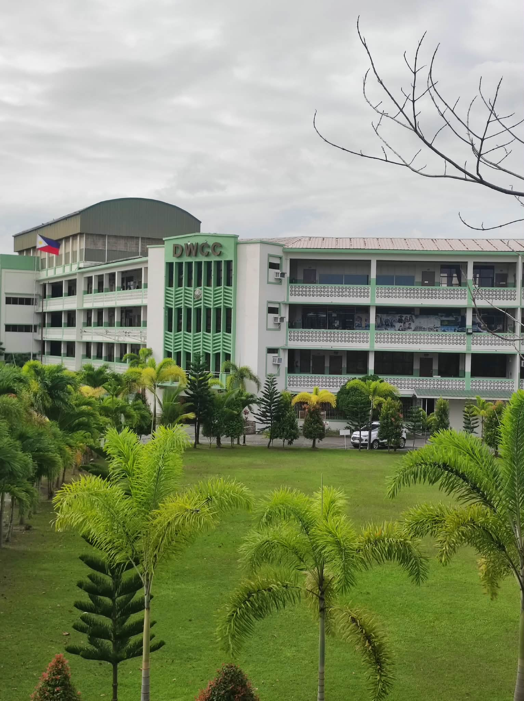

2023

A New Beginning
I started my first year of college in 2023, adjusting to a new school, unfamiliar surroundings, and new experiences.
- Explored and learned new things
- Adjusted to a new environment
- Made friends and built connections